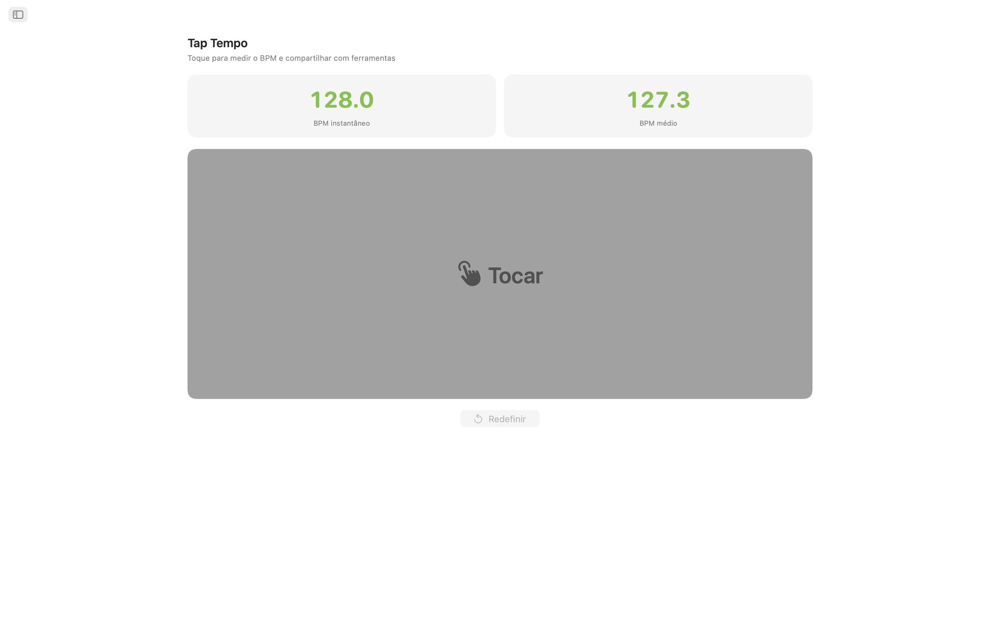
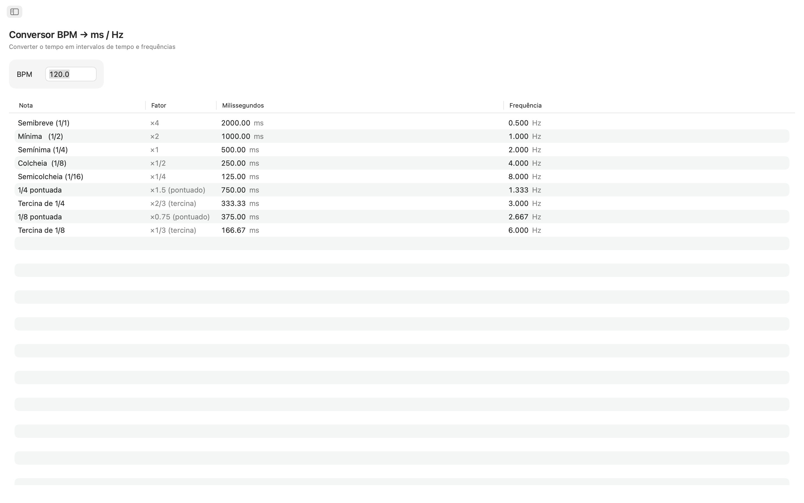
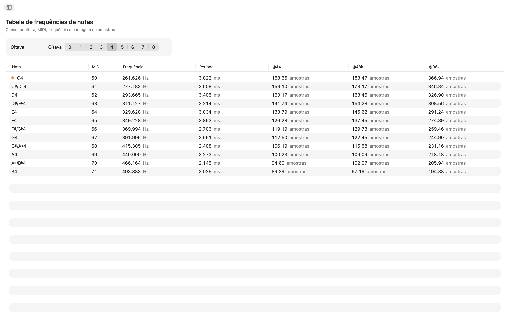
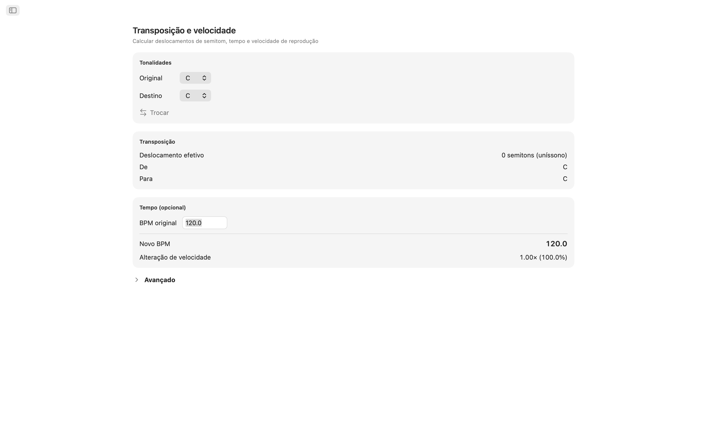
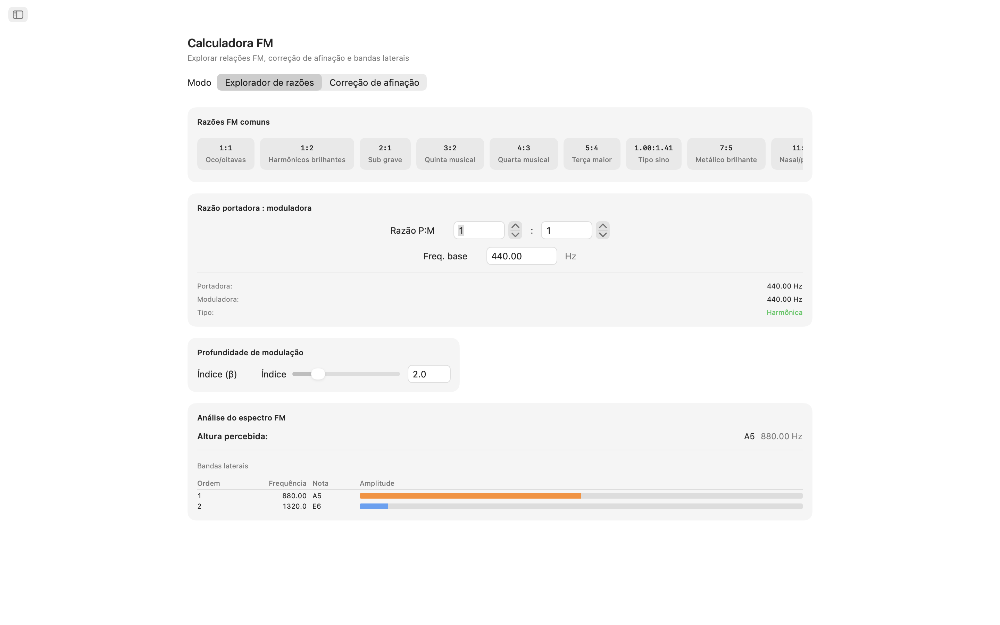
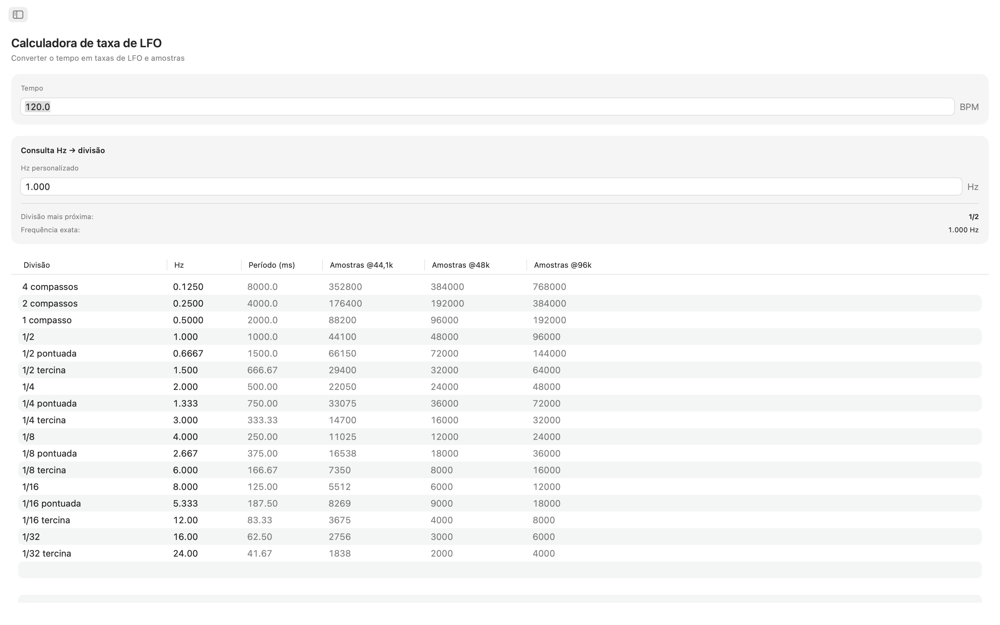
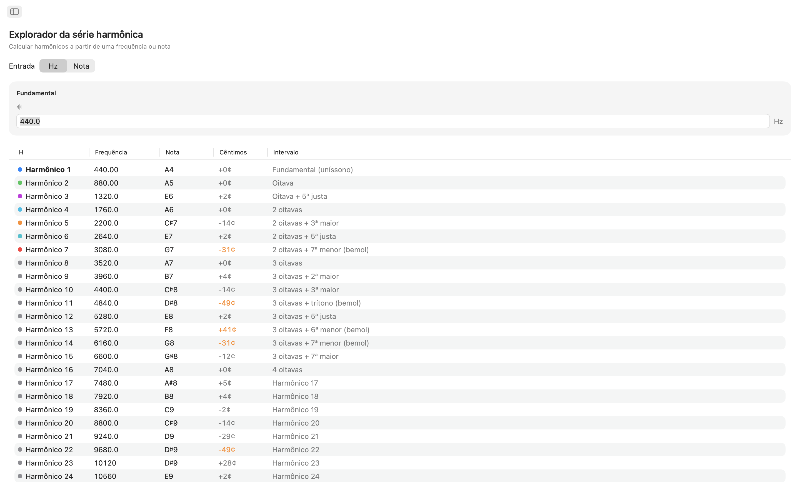
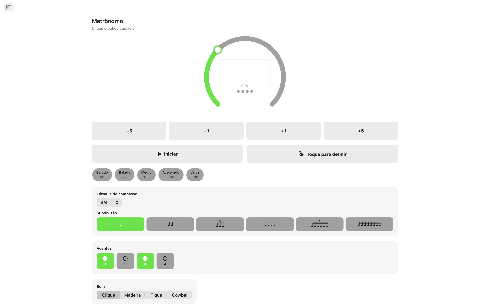
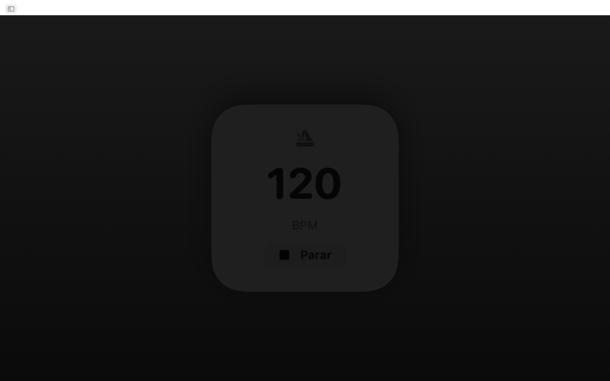
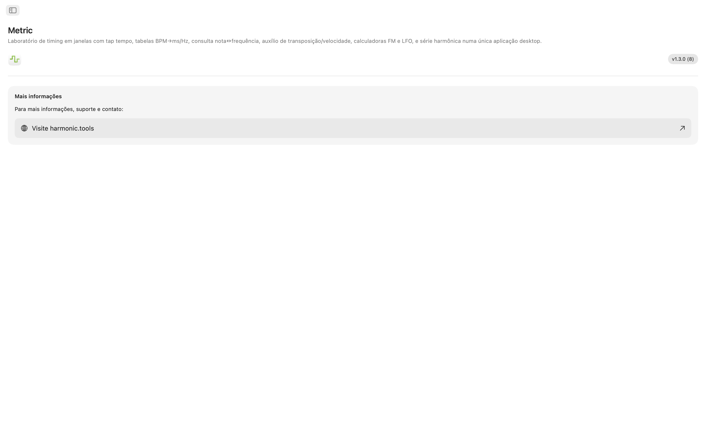

Metric para macOS
Um toolkit de tempo e frequência em janelas para macOS, agora com um metrônomo integrado. Seja para manter o tempo, ajustar tempos de delay em uma mixagem, afinar um patch FM, sincronizar um LFO ou transpor uma amostra, o Metric oferece respostas instantâneas e precisas — tudo em um app limpo com navegação por barra lateral que fica ao lado da sua DAW. Agora com Siri, Shortcuts e um widget na Notification Center.
- Metrônomo com tap tempo e batidas visuais
- BPM → ms / Hz conversor (normal, pontuado, tercina)
- Tabela Nota ↔ Frequência (108 notas, ajuste de afinação)
- Transposição e Velocidade, Calculadora FM, Taxas LFO, 32 Harmônicos
- Siri, Shortcuts e um widget de BPM na Notification Center
Capturas de Tela
Inclui capturas de tela no modo claro e escuro que acompanham o tema do site.












Funcionalidades
- Metrônomo: Um metrônomo preciso com um mostrador de tempo, tempo ajustável por toque, fórmulas de compasso e subdivisões, e um indicador visual de batida claro.
- Tap Tempo: Clique no grande alvo de toque para medir o tempo. Veja o BPM instantâneo do seu último toque e uma média móvel de até oito toques. Envie qualquer leitura diretamente para o Conversor BPM, Transposição ou Taxa LFO com um único clique. Seu tempo flui automaticamente para todas as ferramentas.
- Conversor BPM → ms / Hz: Insira um tempo e leia valores normais, pontuados e tercinas para semibreve, mínima, semínima, colcheia e semicolcheia. Cada linha mostra milissegundos e frequência em Hz, para que você possa ajustar delay, pré-delay de reverb ou timing de sidechain sem precisar de calculadora.
- Tabela de Frequência de Notas: Navegue por todas as 108 notas cromáticas de C0 a B8. Cada nota mostra seu número MIDI, frequência em Hz, período em milissegundos e contagem de amostras a 44,1 kHz, 48 kHz e 96 kHz. O Dó central é destacado para referência rápida. Baseado em A4 = 440 Hz.
- Transposição e Velocidade: Escolha uma tonalidade original e uma tonalidade alvo para ver o shift em semitons, nome do intervalo e valor exato de transposição para DAW. Adicione um BPM original e o Metric calcula o novo tempo e a razão de velocidade de reprodução. Ajuste fino com um slider de cents (±100) e um slider de velocidade abrangendo duas oitavas completas (±24 semitons).
- Calculadora FM: O Explorador de Razões permite definir razões de portadora e moduladora com uma frequência base e escolher entre dez presets clássicos de FM, de oitavas ocas (1:1) a sinos inarmônicos (1:π). O modo Correção de Pitch funciona ao contrário: escolha uma nota alvo e obtenha as frequências exatas de portadora e moduladora. Ambos os modos mostram uma tabela de bandas laterais com até dez parciais, suas frequências, notas mais próximas e amplitudes com código de cores controladas por um slider de índice de modulação.
- Calculadora de Taxa LFO: Converta qualquer BPM em taxas de LFO em 17 divisões musicais, de quatro compassos até tercinas de 1/32. Cada linha exibe Hz, período em milissegundos e amostras por ciclo a 44,1 kHz, 48 kHz e 96 kHz. A busca reversa permite inserir qualquer valor em Hz e encontrar a divisão musical mais próxima, com o erro claramente indicado.
- Explorador da Série Harmônica: Comece por uma frequência ou escolha qualquer nota e veja os primeiros 32 harmônicos listados com frequência, nome da nota mais próxima, desvio em cents e rótulo de intervalo. Harmônicos de baixa ordem são codificados por cores para fácil identificação. Desvios maiores que 30 cents são destacados para que você possa identificar conteúdo inarmônico de relance.
Ferramentas Que Se Comunicam
Toque um tempo uma vez e ele aparece em todos os lugares: Conversor BPM, Transposição e Taxa LFO compartilham o mesmo BPM ao vivo. Frequência de Notas, Calculadora FM e Harmônicos permanecem consistentes em A4 = 440 Hz.
Siri, Shortcuts e Widget
Controle o Metric sem usar as mãos. Peça à Siri para iniciar ou parar o metrônomo, definir um BPM, tocar um tempo, converter BPM em ms, encontrar a frequência de uma nota ou transpor um tempo. Cada ferramenta também é uma ação dos Shortcuts, e o widget de BPM mantém seu tempo na Notification Center.
Feito para Seu Desktop
- Funciona totalmente offline — sem conta, sem anúncios, sem rastreamento
- App nativo macOS com navegação por barra lateral
- Interface compatível com modo escuro que segue a aparência do sistema
- Três taxas de amostragem padrão da indústria: 44,1 kHz, 48 kHz e 96 kHz
- Janela redimensionável — mantenha-a aberta ao lado da sua DAW
Seja você um produtor programando delays, um sound designer esculpindo timbres FM, um tecladista afinando osciladores ou um engenheiro de áudio verificando frequências, o Metric coloca todas as respostas de tempo e frequência no seu desktop.